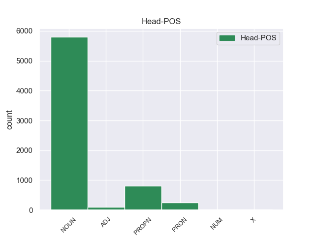

Distribution of features within this leaf



Agreement Rules sorted by frequency.
- When the dependent token is the determiner(det) of the head token, and the dependent token is DET.
1 Αυτό _ _ _ _ 0 _ _ _
2 μπορεί _ _ _ _ 0 _ _ _
3 να _ _ _ _ 0 _ _ _
4 μην _ _ _ _ 0 _ _ _
5 οδηγήσει _ _ _ _ 0 _ _ _
6 σ _ _ _ _ 0 _ _ _
7 τη _ _ _ _ 0 _ _ _
8 λήξη _ _ _ _ 0 _ _ _
9 του _ _ _ _ 0 _ _ _
10 εν _ _ _ _ 0 _ _ _
11 λόγω _ _ _ _ 0 _ _ _
12 ζητήματος _ _ _ _ 0 _ _ _
13 αλλά _ _ _ _ 0 _ _ _
14 , _ _ _ _ 0 _ _ _
15 σ _ _ _ _ 0 _ _ _
16 τη _ _ _ _ 0 _ _ _
17 μορφή _ _ _ _ 0 _ _ _
18 υπό _ _ _ _ 0 _ _ _
19 την _ _ _ _ 0 _ _ _
20 οποία _ _ _ _ 0 _ _ _
21 την _ _ _ _ 0 _ _ _
22 λάβαμε _ _ _ _ 0 _ _ _
23 , _ _ _ _ 0 _ _ _
24 αυτή _ _ _ _ 0 _ _ _
25 η _ _ _ _ 0 _ _ _
26 αίτηση _ _ _ _ 0 _ _ _
27 άρσης _ _ _ _ 0 _ _ _
28 της _ _ _ _ 0 _ _ _
29 ασυλίας _ _ _ _ 0 _ _ _
30 ήταν _ _ _ _ 0 _ _ _
31 , _ _ _ _ 0 _ _ _
32 κατά _ _ _ _ 0 _ _ _
33 την _ _ _ _ 0 _ _ _
34 άποψη _ _ _ _ 0 _ _ _
35 της _ _ _ _ 0 _ _ _
36 Επιτροπής _ _ _ _ 0 _ _ _
37 Νομικών _ _ _ _ 0 _ _ _
38 Θεμάτων _ _ _ _ 0 _ _ _
39 , _ _ _ _ 0 _ _ _
40 απαράδεκτη _ _ _ _ 0 _ _ _
41 , _ _ _ _ 0 _ _ _
42 άποψη _ _ _ _ 0 _ _ _
43 την _ _ _ _ 0 _ _ _
44 οποία _ _ _ _ 0 _ _ _
45 συνιστώ _ _ _ _ 0 _ _ _
46 σ _ _ _ _ 0 _ _ _
47 το ο DET _ Case=Acc|Gender=Neut|Number=Sing 48 det _ _
48 Σώμα σώμα NOUN _ Case=Acc|Gender=Neut|Number=Sing 0 _ _ _
49 να _ _ _ _ 0 _ _ _
50 υιοθετήσει _ _ _ _ 0 _ _ _
51 . _ _ _ _ 0 _ _ _
1 Κυρία _ _ _ _ 0 _ _ _
2 Πρόεδρε _ _ _ _ 0 _ _ _
3 , _ _ _ _ 0 _ _ _
4 πέρυσι _ _ _ _ 0 _ _ _
5 σ _ _ _ _ 0 _ _ _
6 τις _ _ _ _ 0 _ _ _
7 13_Δεκεμβρίου _ _ _ _ 0 _ _ _
8 , _ _ _ _ 0 _ _ _
9 εκδηλώθηκε _ _ _ _ 0 _ _ _
10 μια _ _ _ _ 0 _ _ _
11 άγρια _ _ _ _ 0 _ _ _
12 και _ _ _ _ 0 _ _ _
13 φρικιαστική _ _ _ _ 0 _ _ _
14 επίθεση _ _ _ _ 0 _ _ _
15 εναντίον _ _ _ _ 0 _ _ _
16 του _ _ _ _ 0 _ _ _
17 κοινοβουλίου _ _ _ _ 0 _ _ _
18 της _ _ _ _ 0 _ _ _
19 Ινδικής _ _ _ _ 0 _ _ _
20 Ένωσης _ _ _ _ 0 _ _ _
21 σ _ _ _ _ 0 _ _ _
22 το _ _ _ _ 0 _ _ _
23 Δελχί _ _ _ _ 0 _ _ _
24 , _ _ _ _ 0 _ _ _
25 το _ _ _ _ 0 _ _ _
26 οποίο _ _ _ _ 0 _ _ _
27 είναι _ _ _ _ 0 _ _ _
28 το ο DET DET Case=Nom|Definite=Def|Gender=Neut|Number=Sing|PronType=Art 31 amod _ _
29 πλέον _ _ _ _ 0 _ _ _
30 απτό _ _ _ _ 0 _ _ _
31 σύμβολο σύμβολο NOUN NOUN Case=Nom|Gender=Neut|Number=Sing 0 _ _ _
32 της _ _ _ _ 0 _ _ _
33 δημοκρατίας _ _ _ _ 0 _ _ _
34 και _ _ _ _ 0 _ _ _
35 του _ _ _ _ 0 _ _ _
36 κοσμικού _ _ _ _ 0 _ _ _
37 εθνικού _ _ _ _ 0 _ _ _
38 χαρακτήρα _ _ _ _ 0 _ _ _
39 αυτής _ _ _ _ 0 _ _ _
40 της _ _ _ _ 0 _ _ _
41 χώρας _ _ _ _ 0 _ _ _
42 . _ _ _ _ 0 _ _ _
Disagree Examples:
1 Πληροφορίες _ _ _ _ 0 _ _ _
2 αναφέρουν _ _ _ _ 0 _ _ _
3 ότι _ _ _ _ 0 _ _ _
4 " _ _ _ _ 0 _ _ _
5 η _ _ _ _ 0 _ _ _
6 συμφωνία _ _ _ _ 0 _ _ _
7 προβλέπει _ _ _ _ 0 _ _ _
8 παράταση _ _ _ _ 0 _ _ _
9 για _ _ _ _ 0 _ _ _
10 δύο _ _ _ _ 0 _ _ _
11 μήνες _ _ _ _ 0 _ _ _
12 της _ _ _ _ 0 _ _ _
13 προθεσμίας _ _ _ _ 0 _ _ _
14 ισχύος _ _ _ _ 0 _ _ _
15 των _ _ _ _ 0 _ _ _
16 μέτρων _ _ _ _ 0 _ _ _
17 του _ _ _ _ 0 _ _ _
18 " _ _ _ _ 0 _ _ _
19 δημοσιονομικού _ _ _ _ 0 _ _ _
20 γκρεμού _ _ _ _ 0 _ _ _
21 " _ _ _ _ 0 _ _ _
22 και _ _ _ _ 0 _ _ _
23 αύξηση _ _ _ _ 0 _ _ _
24 των _ _ _ _ 0 _ _ _
25 φόρων _ _ _ _ 0 _ _ _
26 σε _ _ _ _ 0 _ _ _
27 εισοδήματα _ _ _ _ 0 _ _ _
28 που _ _ _ _ 0 _ _ _
29 ξεπερνούν _ _ _ _ 0 _ _ _
30 τις ο DET DET Case=Acc|Definite=Def|Gender=Fem|Number=Plur|PronType=Art 32 det _ _
31 450000 _ _ _ _ 0 _ _ _
32 δολάρια δολάριο NOUN NOUN Case=Acc|Gender=Neut|Number=Plur 0 _ _ _
33 το _ _ _ _ 0 _ _ _
34 χρόνο _ _ _ _ 0 _ _ _
35 " _ _ _ _ 0 _ _ _
36 . _ _ _ _ 0 _ _ _
1 Με _ _ _ _ 0 _ _ _
2 μεγάλη _ _ _ _ 0 _ _ _
3 πλειοψηφία _ _ _ _ 0 _ _ _
4 εγκρίθηκε _ _ _ _ 0 _ _ _
5 από _ _ _ _ 0 _ _ _
6 τη _ _ _ _ 0 _ _ _
7 Γενική _ _ _ _ 0 _ _ _
8 Συνέλευση _ _ _ _ 0 _ _ _
9 του _ _ _ _ 0 _ _ _
10 Συμβουλίου _ _ _ _ 0 _ _ _
11 της _ _ _ _ 0 _ _ _
12 Ευρώπης _ _ _ _ 0 _ _ _
13 σ _ _ _ _ 0 _ _ _
14 το _ _ _ _ 0 _ _ _
15 Στρασβούργο _ _ _ _ 0 _ _ _
16 η _ _ _ _ 0 _ _ _
17 έκθεση _ _ _ _ 0 _ _ _
18 της ο DET DET Case=Gen|Definite=Def|Gender=Fem|Number=Sing|PronType=Art 20 det _ _
19 Ολλανδής _ _ _ _ 0 _ _ _
20 βουλευτού βουλευτής NOUN NOUN Case=Gen|Gender=Masc|Number=Sing 0 _ _ _
21 , _ _ _ _ 0 _ _ _
22 κυρίας _ _ _ _ 0 _ _ _
23 Strick _ _ _ _ 0 _ _ _
24 , _ _ _ _ 0 _ _ _
25 για _ _ _ _ 0 _ _ _
26 το _ _ _ _ 0 _ _ _
27 μεταναστευτικό _ _ _ _ 0 _ _ _
28 σ _ _ _ _ 0 _ _ _
29 την _ _ _ _ 0 _ _ _
30 Ελλάδα _ _ _ _ 0 _ _ _
31 . _ _ _ _ 0 _ _ _
1 Ο _ _ _ _ 0 _ _ _
2 γιος _ _ _ _ 0 _ _ _
3 της _ _ _ _ 0 _ _ _
4 , _ _ _ _ 0 _ _ _
5 πρίγκηπας _ _ _ _ 0 _ _ _
6 Γουλιέλμος _ _ _ _ 0 _ _ _
7 - _ _ _ _ 0 _ _ _
8 Αλέξανδρος _ _ _ _ 0 _ _ _
9 - _ _ _ _ 0 _ _ _
10 τώρα _ _ _ _ 0 _ _ _
11 θα _ _ _ _ 0 _ _ _
12 είναι _ _ _ _ 0 _ _ _
13 γνωστός _ _ _ _ 0 _ _ _
14 ως _ _ _ _ 0 _ _ _
15 βασιλιάς _ _ _ _ 0 _ _ _
16 Γουλιέλμος _ _ _ _ 0 _ _ _
17 Δ' _ _ _ _ 0 _ _ _
18 - _ _ _ _ 0 _ _ _
19 ήταν _ _ _ _ 0 _ _ _
20 γνωστός _ _ _ _ 0 _ _ _
21 για _ _ _ _ 0 _ _ _
22 τα _ _ _ _ 0 _ _ _
23 ερωτικά _ _ _ _ 0 _ _ _
24 του _ _ _ _ 0 _ _ _
25 σκάνδαλα _ _ _ _ 0 _ _ _
26 , _ _ _ _ 0 _ _ _
27 αν _ _ _ _ 0 _ _ _
28 και _ _ _ _ 0 _ _ _
29 τη _ _ _ _ 0 _ _ _
30 τελευταία _ _ _ _ 0 _ _ _
31 δεκαετία _ _ _ _ 0 _ _ _
32 σταμάτησε _ _ _ _ 0 _ _ _
33 να _ _ _ _ 0 _ _ _
34 μπλέκει _ _ _ _ 0 _ _ _
35 σε _ _ _ _ 0 _ _ _
36 σκάνδαλα _ _ _ _ 0 _ _ _
37 και _ _ _ _ 0 _ _ _
38 ανέλαβε _ _ _ _ 0 _ _ _
39 την ο DET DET Case=Acc|Definite=Def|Gender=Fem|Number=Sing|PronType=Art 40 det _ _
40 προεδρεία προεδρείο NOUN NOUN Case=Acc|Gender=Neut|Number=Plur 0 _ _ _
41 της _ _ _ _ 0 _ _ _
42 Επιτροπής _ _ _ _ 0 _ _ _
43 του _ _ _ _ 0 _ _ _
44 ΟΗΕ _ _ _ _ 0 _ _ _
45 για _ _ _ _ 0 _ _ _
46 το _ _ _ _ 0 _ _ _
47 Νερό _ _ _ _ 0 _ _ _
48 , _ _ _ _ 0 _ _ _
49 καθώς _ _ _ _ 0 _ _ _
50 επίσης _ _ _ _ 0 _ _ _
51 συνεργάζεται _ _ _ _ 0 _ _ _
52 με _ _ _ _ 0 _ _ _
53 τη _ _ _ _ 0 _ _ _
54 Διεθνή _ _ _ _ 0 _ _ _
55 Ολυμπιακή _ _ _ _ 0 _ _ _
56 Επιτροπή _ _ _ _ 0 _ _ _
57 . _ _ _ _ 0 _ _ _
1 Ό,τι _ _ _ _ 0 _ _ _
2 και _ _ _ _ 0 _ _ _
3 να _ _ _ _ 0 _ _ _
4 σήμαινε _ _ _ _ 0 _ _ _
5 το _ _ _ _ 0 _ _ _
6 όνομα _ _ _ _ 0 _ _ _
7 Μακεδονία _ _ _ _ 0 _ _ _
8 σ _ _ _ _ 0 _ _ _
9 την _ _ _ _ 0 _ _ _
10 αρχαιότητα _ _ _ _ 0 _ _ _
11 , _ _ _ _ 0 _ _ _
12 σ _ _ _ _ 0 _ _ _
13 τα _ _ _ _ 0 _ _ _
14 τέλη _ _ _ _ 0 _ _ _
15 του _ _ _ _ 0 _ _ _
16 19ου _ _ _ _ 0 _ _ _
17 αιώνα _ _ _ _ 0 _ _ _
18 δήλωνε _ _ _ _ 0 _ _ _
19 τη _ _ _ _ 0 _ _ _
20 περιοχή _ _ _ _ 0 _ _ _
21 που _ _ _ _ 0 _ _ _
22 εκτεινόταν _ _ _ _ 0 _ _ _
23 δυτικά _ _ _ _ 0 _ _ _
24 από _ _ _ _ 0 _ _ _
25 τις _ _ _ _ 0 _ _ _
26 λίμνες _ _ _ _ 0 _ _ _
27 Οχρίδα _ _ _ _ 0 _ _ _
28 και _ _ _ _ 0 _ _ _
29 Πρέσπα _ _ _ _ 0 _ _ _
30 μέχρι _ _ _ _ 0 _ _ _
31 τον _ _ _ _ 0 _ _ _
32 ποταμό _ _ _ _ 0 _ _ _
33 Νέστο _ _ _ _ 0 _ _ _
34 ανατολικά _ _ _ _ 0 _ _ _
35 , _ _ _ _ 0 _ _ _
36 και _ _ _ _ 0 _ _ _
37 από _ _ _ _ 0 _ _ _
38 τα _ _ _ _ 0 _ _ _
39 βουνά _ _ _ _ 0 _ _ _
40 του _ _ _ _ 0 _ _ _
41 Σαρ _ _ _ _ 0 _ _ _
42 , _ _ _ _ 0 _ _ _
43 της ο DET DET Case=Gen|Definite=Def|Gender=Fem|Number=Sing|PronType=Art 44 det _ _
44 Ρίλας Ρίλας PROPN PROPN Case=Nom|Gender=Masc|Number=Sing 0 _ _ _
45 και _ _ _ _ 0 _ _ _
46 της _ _ _ _ 0 _ _ _
47 Ροδόπης _ _ _ _ 0 _ _ _
48 από _ _ _ _ 0 _ _ _
49 βορρά _ _ _ _ 0 _ _ _
50 μέχρι _ _ _ _ 0 _ _ _
51 την _ _ _ _ 0 _ _ _
52 Πίνδο _ _ _ _ 0 _ _ _
53 , _ _ _ _ 0 _ _ _
54 τον _ _ _ _ 0 _ _ _
55 Όλυμπο _ _ _ _ 0 _ _ _
56 και _ _ _ _ 0 _ _ _
57 το _ _ _ _ 0 _ _ _
58 Αιγαίο _ _ _ _ 0 _ _ _
59 προς _ _ _ _ 0 _ _ _
60 νότο _ _ _ _ 0 _ _ _
61 . _ _ _ _ 0 _ _ _
1 Το _ _ _ _ 0 _ _ _
2 1991 _ _ _ _ 0 _ _ _
3 ισχυρίστηκε _ _ _ _ 0 _ _ _
4 πως _ _ _ _ 0 _ _ _
5 οι ο DET DET Case=Nom|Definite=Def|Gender=Masc|Number=Plur|PronType=Art 7 det _ _
6 Κινέζοι _ _ _ _ 0 _ _ _
7 άποικοι άποικος NOUN NOUN Case=Nom|Gender=Fem|Number=Plur 0 _ _ _
8 σ _ _ _ _ 0 _ _ _
9 το _ _ _ _ 0 _ _ _
10 Θιβέτ _ _ _ _ 0 _ _ _
11 δημιουργούν _ _ _ _ 0 _ _ _
12 ένα _ _ _ _ 0 _ _ _
13 " _ _ _ _ 0 _ _ _
14 Κινεζικό _ _ _ _ 0 _ _ _
15 Απαρτχάιντ _ _ _ _ 0 _ _ _
16 " _ _ _ _ 0 _ _ _
17 : _ _ _ _ 0 _ _ _